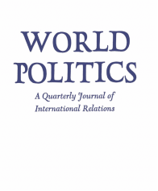

收录于合集

作品简介
【作者】 J. David Singer(1925—2009)，常用中译名为戴维·辛格，是享誉世界的国际关系学大师。他拥有杜克大学的学士学位和纽约大学的博士学位，生前为密歇根大学荣休教授。他的主要贡献是自1964年在密歇根大学开展的“战争相关因素项目”（Correlates of War project），该项目收集有关国家间战争和冲突的历史数据，推动了对战争原因的定量研究。
【编译】 施榕（国政学人编译员，北京大学国际关系学院博士研究生）
【校对】 周玫琳
【审核】 王川
【排版】 李佳霖【来源】J. David Singer，“The Level-of Analysis Problem in International Relations,” World Politics , Vol. 14, No.1, 1961, pp. 77-92.
期刊介绍

World Politics （《世界政治》）创刊于1948年，是国际著名的政治科学季刊，内容涵盖国际关系和政治学各个领域，由剑桥大学出版社代表普林斯顿国际和区域研究所出版，主编是德博拉·亚沙尔（Deborah J. Yashar）。该刊欢迎具有理论和实证贡献的研究类文章，以及有关国际关系和比较政治问题的评论性文章投稿。2018年该期刊的影响因子为3.368，在国际关系类别的91种期刊中位列第7名，在政治科学类别的176种期刊中位列第15名。
戴维 ·辛格 ： 国际关系中的层次分析问题
内容提要
在任何学术研究领域，总会有几种方法对所研究的现象进行分类和整理，以便进行系统的分析。无论是在自然科学还是社会科学中，观察者可能选择关注系统的组成部分，也可能选择关注整个系统。表面上看，观察者选择采取微观层次还是宏观层次的分析仅仅是出于一种概念上或者方法上的便利。然而，选择往往是相当困难的，并且有可能成为学科所关心的中心议题。在众多社会科学领域中，负责任的学者必须准备好衡量他所面临的各种分析层次在概念和方法上的相对效用，并评估最终选定的分析层次的多种意义。国际关系学科也是如此。尽管在社会科学领域，有许多学科对各种可能的分析层次的利弊进行了详尽的讨论，但是在国际关系这门新兴的学科中，这一问题却极少被提出来。这种沉寂可能表明这一问题与本学科没有密切的关联，也可能意味着这一问题已经被解决。作者深信这一问题的重要性，并确信这一问题尚未得到解决。不管对这一问题的漠视是国际关系学科相对稚嫩的结果，还是它所起源的知识传统的性质，这一问题仍然是导致国家间关系理论发展得普遍迟缓的一个重要因素。本文的目的是提出这一问题，并考察两个被广泛使用的分析层次:国际体系（international system）和国家次级体系(national sub-system)的理论意义和后果。
文章导读
一、 ** ** 分析模型的要求**** ****
在考察我们的模型中所采用的分析层次或取向的理论意义之前，有必要讨论一下这种模型的可能用途，以及这些用途对该模型所提出的要求。
首先 ，我们要求 模型对它所研究的 现象提供高度准确的描述。 它必须尽可能完整而不失真地描述这些现象;它必须与客观现实相关联，并尽可能与我们的经验参照对象相一致。但我们知道这种对复杂现象的精确描述是极其困难的，因此在评估一个分析模型对国际关系研究的作用时，需要保有一些必要的宽容。如果我们必须牺牲总体表述的准确性（total representational accuracy）,那么问题就是决定哪里的失真是影响最小的，以及哪里的精确是绝对必要的。
这些决定 取决于我们对任何分析模型的第二个要求， 即解释所研究的现象的能力 。在这里，我们关注解释的有效性多于描述的准确性。 我们的模型必须 有 使因果关系的处理合理、完整且简洁的 分析能力 。对简洁的要求经常被忽视，但它对研究策略的意义同样重要。 理论的 首要 目的应该是解释， 当描述功能和解释功能发生冲突时，应以后者优先，即使 是以牺牲 某些表述的准确性为代价。
最后， 我们可以合理地要求 任何分析模型 提供可靠 的 预测。 在最后提出这一要求，并不意味着它是三者之中要求最高的或者最困难的。与普遍的想法相反，预测对模型的需求少于解释甚或描述对模型的需求 。 预测未必需要一个特别优雅或复杂的普遍模型，但解释所需要的东西则远远超出我们的想象。同样，我们可以作出如下非常可靠的预测：任何国家都会以牙还牙地应对军事攻击。尽管这些应对行动本身极为简单，但对导致这种反应的过程和因素的描述和理解却要难得多。
在十分简要地阐述了对合格的分析模型的要求之后，我们现在可以开始考虑对分析重点的选择将如何影响模型及其描述、解释和预测的功能。
二、 作为分析层次的国际体系 ****
我们从分析的体系层次开始探讨。 国际体系 这一分析层次的优点在于： 首先，它是 所有层次中最综合全面的， 包含了 体系 及其环境中发生的所有 互动 。只有体系层次能让我们全面地审视国际关系，而当我们的重点转移到较低的和只关注部分的层次时，就必然失去了这种综合性。 对于描述的目的而言，它 同时 具有 优点和缺点 ；优点源于 其 综合性 ， 缺点则 源于 对细节的必然缺失 。 就 解释 的 能力 而言 ， 以体系为导向的 模型 提出了一些真 正的 难题 。
首先，它往往使观察 者 夸大 体系 对国家行 为体 的 影响 ，反过来又贬低 国家行为体 对 体系 的影响 。因此，在一个以体系为导向的模型中，我们可能会倾向于剥夺国家的自主性和作出选择的独立性， 并走向更具决定论色彩的立场。
其次，这一分析层次几乎不可避免地要求我们 假定国家行 为体在外交政策中 具有高度一致的行动准则， 而给国家之间的差异留下极少的空间 。通过回避各国国内的差别，以体系为导向的研究路径倾向于将国家行为体塑造为某种“黑箱”概念。通过低估或者否认国家之间的差异，或者假定这些差异几乎不可能被观察到，人们可以推断国际体系中的国家具有高度的同质性。 虽然这不足以成为陈述 因果关系的 基础，但 它为相关 关系 的陈述提供了一个合理 而 充分的基础。 更具体地说，它使我们能够观察和测量某些似乎影响国家的力量或刺激，以及与这些力量或刺激所导致的明显行为后果之间的相关关系。但我们必须强调“明显的”一词所隐含的局限性;被认为是一个给定刺激的结果可能只是一个巧合或人为的产物， 在有人 研究了因果 链条 中的主要 组成部分之前， 无论演绎逻辑多么有说服力 ，人们 可能只 能 谈论相关性，而不是 因果关系。
此外，通过规避对国家内部进行观察的种种隐患，这种模型特别好操作，它几乎不需要复杂的方法或繁重的实证，而这些是（深入）探究到行为体外部行为之下时所必需的。最后，正如在前文介绍中所提到的，以体系为导向的模型应该成为相当令人满意的预测基础，即使这种预测超出了体系的特征，并试图对行为体本身作出预测。
三、 作为分析层次的民族国家
本文要考虑的另一个分析层次是民族国家——也是国际关系中的首要行为体。这显然是西方学者的传统关注点。
民族国家分析层次 最明显的优点是它 允许 国际体系中的 行为体 之间有很大的差别。因为它不需要国家 行为体的属性 有很大的相似之处，所以它鼓励 观察者对国家进行更为细致的考察。 这种细致的分析所产生的结果无法被忽略，因为 只有当行为体被深入研究时我们才能进行具有比较性质的有效概括 。尽管体系模型并不必然排除国家之间的比较，但是它通常导致的是以相对粗糙的维度和特征为基础的粗略比较。另一方面,我们无法保证以国家为导向的研究路径会产生用于比较研究的复杂的外交政策模型；也许除了厄恩斯特·哈斯（Earnest B. Haas）和艾伦·惠廷（Allen S. Whiting)的研究以外，我们的主要文献中没有一篇严肃而成功地用可能让国家的行为置于比较分析下的变量对一个国家的行为进行描述和解释。
但是，正如将关注点放在国家行为体上能让我们避免不准确的同质化(这通常来自于对体系的关注)， 它也可能 将我们引向另一种 扭曲的类型 ——即 显著夸大国家行为体 之间的差异 。这两种极端情况都不利于对外交政策进行复杂的比较，而这种比较要求我们在相似性和差异性之间保持关注的平衡，当我们屈从于过度强调差异的倾向时是最危险的，因为比较和对比只能在可观察的统一性的基础上推进。
将研究定位在国家层面上的另一个重要意义是，只有在其特定的框架内，我们才能期待决策方法的任何有益的应用。当然，并不是我们所有人都会认为它的不适用性是一个重大的损失;考虑到针对决策方法的批评，以及我们大多数人没有尝试去应用它，人们可能会得出这根本不是损失的结论。 但是，这里要注意的重要一点是，无论我们对决策方法的评价如何，一个 以体系为导向的模型将不 会为 以如此详细和比较的方法来研究国 际关系 提供 一个 舒适 的框架。
选择国家作为分析层次的另一个可能更微妙的 意义（或结果） 是，它提出了关于国家政策的目标、动机和目的的 一整套 问题 。虽然这很可能是西方哲学传统的一个特性，但在需要解释个人或集体行为时，我们似乎表现出一种强烈的追求目标的倾向。 国家 的 行为是否 具有 目的性的问题似乎需要从两个不同的 (但不总是 相互排斥 的 )维度来讨论。
首先，一个更明显的问题是， 那些代表国家制定和执行外交政策的人是否有意识地追求 相当 具体的目标 ？ 而且很难否认，例如这些履行角色的个人设想了某些特定的结果，他们希望通过追求某一特殊的策略来实现这些特定的结果。从这个意义上来说，国家可能是追求目标的有机体,会展现出有目的的行为。然而,我们可以通过一个设问来从略微不同的角度来观察目的性：由于人类追寻那些将自身区别于物质性实体与其他低级动物的特征，目的性是否只是人类出于对自由意志徒劳的迷恋而加诸自身的智识建构（intellectual construct）？既然把这种有意识的追求目标的行为归结到个人，那么我们可以说，人类把这种特性投射到他所参加的社会组织中去了。问题似乎可以被归结为:人类和及其所组成的社会是追求他们自己选择的目标，还是被那些他们根本无法控制的力量强加给他们的目标所驱使。 显然，我们 是以两种截然不同的方式来使 用 “目标” 和 “目的” 等 术语 ;一种是指那些 人们 有意识地设想 出来并或多或少出于理 性 而 追求的东西，另一种是指那些行为 体对其所 知甚少但却被驱使着去追求的东西。
当我们采用以国家为导向的模 型 时， 追寻目标的 问题还涉及到某些国家如何以及为什么追求特定种类的目标。 虽然在以体系为导向的模型中，这个问题可能被忽略,或通过认为所有国家行为体具有相同的目标来解决，但关注国家层次的研究路径要求我们调查国家目标被选择的过程,影响这些过程的内部和外部因素,以及它们背后的制度框架。值得注意的是，尽管我们大多数的研究都强烈倾向于采用以国家为导向的模型，针对这些过程的经验性甚至是演绎性的分析却明显少之又少。在任何事件中，目标和动机都既是因变量也是自变量，如果我们想要解释一个国家的外交政策，我们不能仅满足于对这些目标的假定，还要被迫往回走一步来探究它们的产生以及它们似乎成为（影响）国家行为的关键变量的过程。
当我们选择国家层次的分析模型时，还面临着另外一个关系到现象学（ phenomenological ）的难题：我们是根据那些据称是影响该行为的客观因素来考察行为体的行为，还是根据行为体对这些客观因素的感知来考察它们的行为？ 尽管这两种 路径并 不是完全相互排斥的，但它们所 依托 的假定 却 大相径庭，而且往往是互不相容的，因 此 产生了迥然不同的国家行为模型 。
第一个假定涉及到社 会因果关系的问题 。一种观点认为，个人和群体对物理环境的现实、其他个人或群体的行为或力量，以及类似的“客观的”和“真实的”力量或刺激作出的反应遵循的是一种准决定论式的方式（quasi- deterministic fashion）。对立的观点则认为，个人和群体的行为不受这些客观力量的影响，而是受这些力量被感知和评估的方式的影响，无论这种感知可能是扭曲的还是不完整的。对于这一立场的拥护者来说，唯一的实在就是现象——那是被人类感官所识别的; 无法被识别的力量对于行为体而言就不存在， 那些存在的事物只是以它们被感知的方式存在。 如果我们接受现象学的因果关系观，我们将倾向于利用现象学的模型来进行解释。
第二个影响人们偏爱现象学方法的假定更受限制，而且主要是方法论层面上的。 人们可能会认为，如果忽视了外部力量对国家的作用与其总体外交政策行为之间的联系，那么在特定的国际形势下对国家行为的任何描述都是非常不完整的。人们可能会问，当一个人忽视了将外部条件和因素转化为政策决定的中介时，他怎么能谈论一个国家政策的“原由”呢? 我们可 能 观察到国际体系中各种力量与国家行为之间的相互关系，但在缺乏对据称将两者联系起来的因果 链条 进行 实证检验 的情况下，它们之间的因果关系必须 停留在严格的 演绎和假设 阶段 。 相反的观点认为，上述论证源于对社会科学 中 解释 的性质 的错误理解。要解释一个国家或任何其他人类群体的行为，并不需要 对 刺激与反应或输入与输出之间的每一种感知、传递和接收 进行追踪 。
这又引出了与人们在现象学问题上的立场相关的第三个 假定 :政策制定者的现象 场（ phenomenal field ） 的 维度和特征在经验上 是可识别的吗?或者更准确的说,即使我们确信,他们的观念和信仰构成了一个解释国家外交政策的关键变量，这些观念和信仰是否可以被精确而系统地观察到？如果我们相信这些现象变量（phenomenal
variable)是可以被系统地观察到以及是可解释的，并且可以被纳入我们对一个国家在国际体系中的行为的解释之中，那么我们就会进一步倾向于采用现象学的方法。如果不是，或者如果我们确信收集这些数据是低效的或者不经济的，我们将倾向于回避它。
现象学 辩论中 的第四个问题涉及国家作为国际关系 行为体 的 性质 。它是一个 有着明确边界的 独 特 的社会实体吗?还是个人、 制度 **、习俗和程序的集聚?**很明显，那些把国家视为一个完整的社会单元的人，不可能给予现象学方法太多的效用，特别是如果他们倾向于使抽象的概念具体化。这种抽象概念是无法被感知、认知或预期到。另一方面，如果国家被视为在制度框架内运作的一群个人，那么关注那些参与决策过程的个人的现象场是完全合理的。
这些就是围绕现象学的一些问题。 我们当中那些认为不管行为体的意识如何， 社会力量 都在运作， 认为 不需要对因果链条中的所有步骤进行解释并质疑 收集 现象学 数据的实用性 ,或者 将 国家 想象成独立于其个体成员之外的 实体 的人们， 往往会拒绝现象学的方法 。从逻辑上讲，只有那些不同意上述四个假定的人才会被迫采用这种方法。不同意其中任一假定则是采用这种方法的充分理由。
上述讨论表明了采用第二个模型所带来的重要意义和有趣的问题。它们似乎表明， 将研究定位在国家层面上 很可能 产生对 国际关系更丰富的描述和更令人满意的解释 (从经验主义的观点来看)，尽管它的预测能力不会比 以体系为导向的模型 更强。但是，只有 以相当复杂的方法为代价，它 才 会在描述和解释上 取得优势。
四、 结 论 ****
在讨论了这两种可能的分析层次的一些描述性、解释性和预测性的能力之后，现在不妨评估一下这两种分析层次的相对效用，并就它们对国际关系研究中更进一步的理论增长的可能贡献作一些一般性的陈述。
在描述方面，我们发现 体系层次 比国家 层次 更能全面地描述国际关系 的总体图景 。另一方面，较低层次的分析 所导致的 原子化 的 和不那么连贯的 图景 在某种程度上被其更丰富的细节、更大的深度和更 集中 的描绘所平衡。 在解释方面，似乎没有人质疑国家层次的分析更富有成效，它允许对外交政策的制定过程进行彻底的研究。在预测方面，两种分析层次都提供了程度相近的预测，问题在于我们想要预测的对象是什么。
出于各种各样的原因，学者在任何时候都可能对某一层次更感兴趣，毫无疑问他将根据他的研究需要来改变他的研究定位，但是不能在某一研究的中途来改变。最后一个有待讨论的问题是，人们可能会问，如果经验性的参照物在本质上是相同的，那么这两种分析层次还存在不同吗？或者，换句话说，国际关系和比较外交政策之间有什么区别吗?也许一些例子可以说明当分析层析发生变化时，所出现的细微但却重要的差别。 例如人们可以假定，当国际体系以两个最强大的行为体之间的政治冲突为特征时，该体系就有两极分化的强烈倾向。这是一个以体系为导向的命题。在处理相同的经验性参照物时，一个以国家为导向的命题将指出，当一个强大的行为体发现自己与另一个势均力敌的行为体发生政治冲突时，它将倾向于向较弱的邻国施加压力，使其加入自己的联盟。假设这两种命题都是正确的，它们在理论上是有用的，但是会被不同的知识操作（intellectual operation）所验证。 更重要的是 , 我们不能把这两种 命题 加在一起，来实现经验 性概括的 累积 式 增长 ， 这 也 是理论发展的关键所在。
_ ** _ ** _ ** _ 本文由国政学人独家编译推荐，文章观点不代表本平台观点，转载请联系授权。**__ 扫下方二维码查看往期精彩
【联盟战略】为什么亚洲没有北约？集体认同，地区主义和多边主义的起源丨国政学人 第291期
【中英关系】脱欧立场身份与英国对华民意丨国政学人 第293期
【战争研究】暴力的合法性：对海湾战争的批判性分析丨国政学人 第294期match
【冲突研究】代际冲突？青年膨胀与政治暴力 | 国政学人 第295期
【新刊速递】第09期 | International Relations of Asia-Pacific Vol.19,No.3
【新刊速递】第10期 | International Studies Review, Volume.21, No.3, 2019
【新刊速递】第11期 | Cooperation and Conflict, Vol. 54, No. 4, 2019
【新刊速递】第12期 | International Affairs, Vol.95, No.6，2019
分类导览 1
分类导览 2


点“在看”给我一朵小黄花